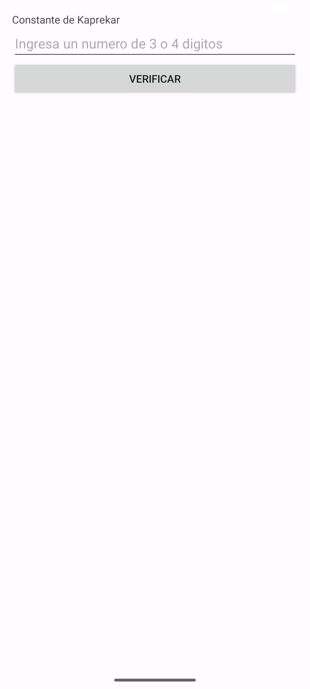
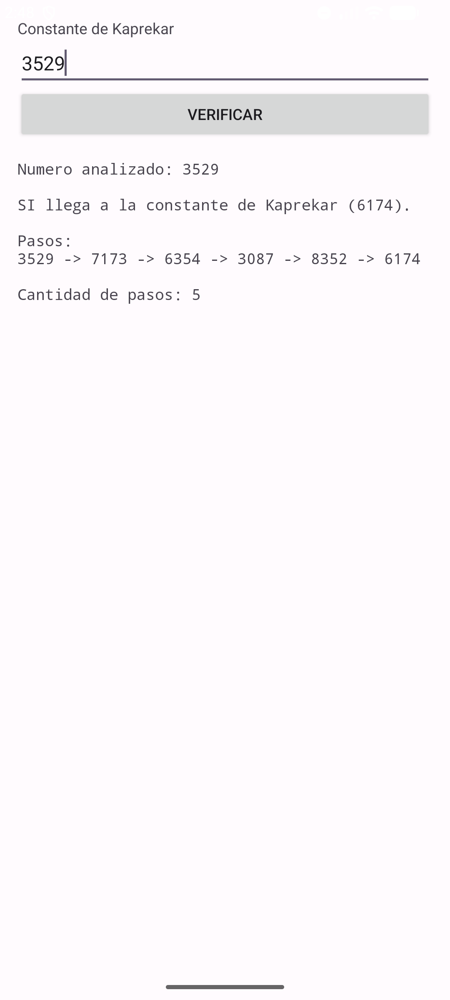
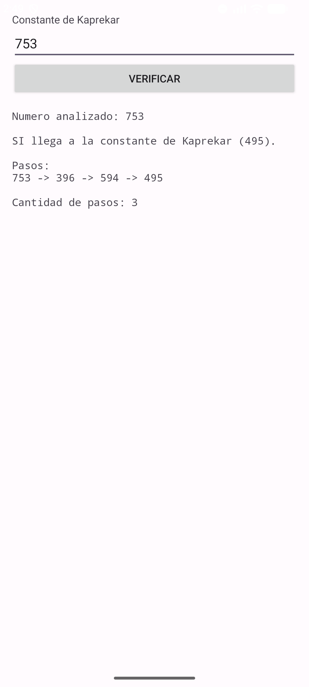
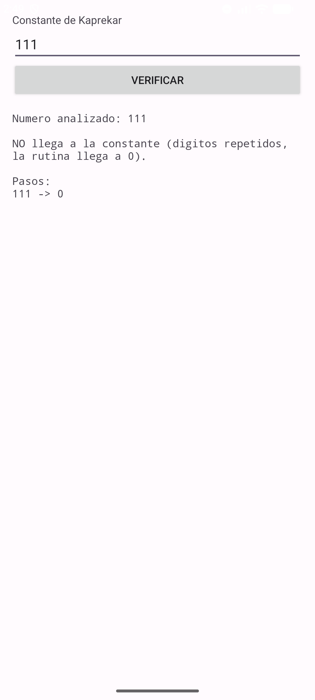

| Asignatura: | Desarrollo de Aplicaciones Móviles Nativas |
| Tarea: | Tarea 6: Constante de Kaprekar |
| Alumno: | Angel Frausto Robles |
| Grupo: | 7CM4 |
| Fecha: | 12 de septiembre de 2026 |
Esta tarea pide construir una aplicación Android que reciba un número de 3 o 4 dígitos y verifique si, al aplicarle repetidamente la rutina de Kaprekar, llega a la constante correspondiente: 495 para números de 3 dígitos o 6174 para números de 4 dígitos.
Objetivos:
Igual que en la Tarea 5, el proyecto se hizo en Java con el SDK clásico de Android:
MainActivity extiende android.app.Activity y la
interfaz usa vistas nativas (EditText, Button,
TextView), sin AndroidX ni ConstraintLayout.
El diseño es el mismo patrón que la Tarea 5: título, campo de texto, botón "Verificar" y un
TextView con los pasos de la rutina, todo dentro de un
ScrollView.
<ScrollView ...>
<LinearLayout android:orientation="vertical" ...>
<TextView android:text="@string/xtitulo" />
<EditText android:id="@+id/xnumero" android:inputType="number"
android:hint="@string/xdato" />
<Button android:id="@+id/xboton" android:text="@string/xaceptar" />
<TextView android:id="@+id/xresultado" android:fontFamily="monospace" />
</LinearLayout>
</ScrollView>
Primero se valida que el número tenga exactamente 3 o 4 dígitos y se fija el objetivo correspondiente
(495 o 6174). Cada paso de la rutina ordena los dígitos de forma ascendente y descendente con
Arrays.sort y resta el menor del mayor:
private int pasoKaprekar(int numero, int digitos) {
char[] cifras = String.format("%0" + digitos + "d", numero).toCharArray();
char[] ascendente = cifras.clone();
Arrays.sort(ascendente);
char[] descendente = cifras.clone();
Arrays.sort(descendente);
invertir(descendente);
int menor = Integer.parseInt(new String(ascendente));
int mayor = Integer.parseInt(new String(descendente));
return mayor - menor;
}
El ciclo principal repite este paso hasta que el número llega al objetivo o hasta que llega a 0, que es lo que pasa cuando los cuatro (o tres) dígitos son iguales: al restar el mismo número ordenado de las dos formas, el resultado siempre es 0, y ahí se queda para siempre porque 0 no es ni 495 ni 6174.
Se probaron tres casos: uno de 4 dígitos, uno de 3 dígitos y el caso especial de dígitos repetidos:
| Número | Dígitos | Resultado | Pasos |
|---|---|---|---|
| 3529 | 4 | Llega a 6174 | 5 |
| 753 | 3 | Llega a 495 | 3 |
| 111 | 3 | No llega (dígitos repetidos) | Llega a 0 en 1 paso |




Lo que más se me quedó de esta tarea es que la constante de Kaprekar no depende del número que uno elija: cualquier número de 4 dígitos que no tenga sus cuatro dígitos iguales termina en 6174, y con números de 3 dígitos pasa lo mismo con 495. Probarlo con 3529 y 753 y ver que ambos convergen en pocos pasos ayuda a confiar en la rutina, pero el caso de 111 fue el que más me sirvió para entender por qué hace falta ese caso especial en el código: sin él, el ciclo se quedaría comparando 0 contra el objetivo para siempre.
https://developer.android.com/guidehttps://en.wikipedia.org/wiki/6174_(number)